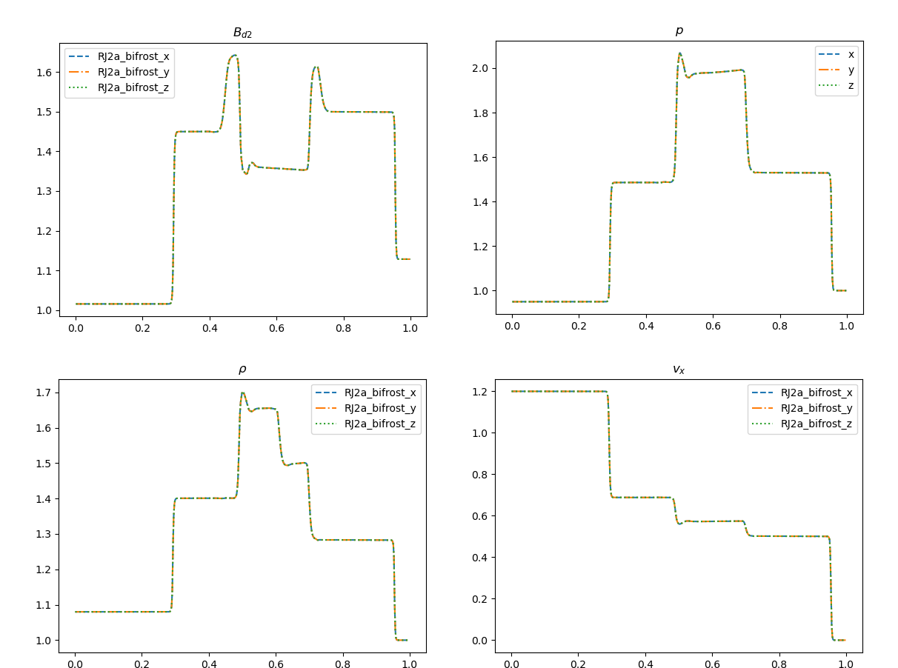
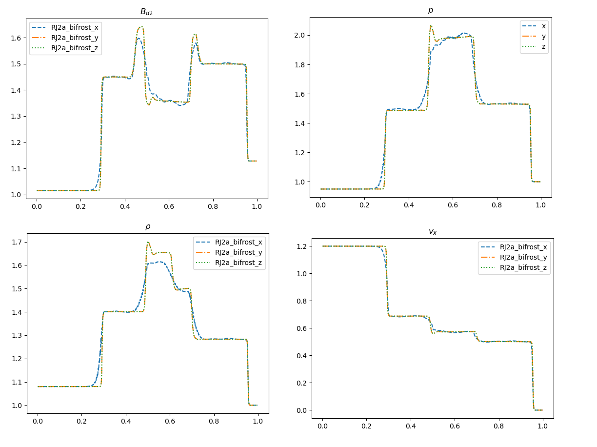
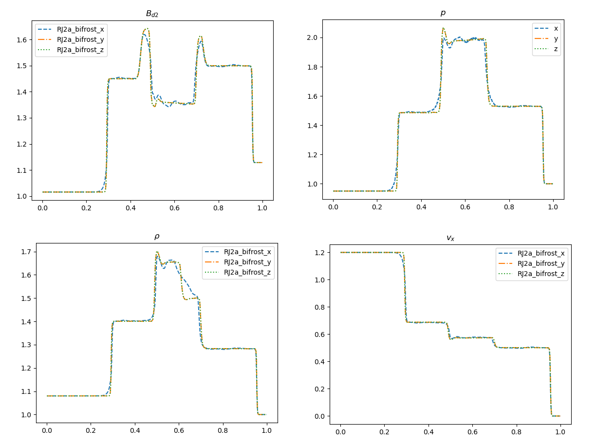
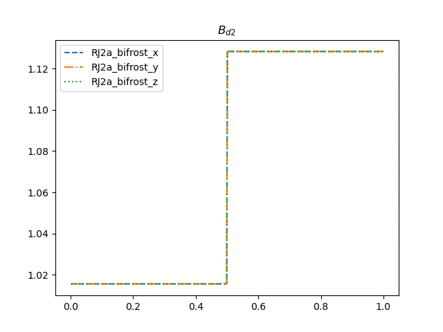
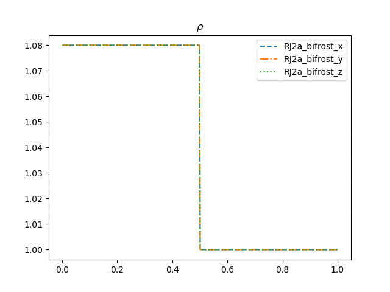

RJ2a test
Hash: 5278846
For the RJ2a test we use the parameter values from table 5 in F. Miniati et al.(2011) as follows
| $$\rho_L$$ | $$v_{x,L}$$ | $$v_{x,L}$$ | $$P_L$$ | $$B_{y,L}$$ | $$B_{z,L}$$ | $$\rho_R$$ | $$P_R$$ | $$B_{y,R}$$ | $$B_{z,R}$$ | $$v_{i,R}$$ | $$\gamma$$ |
|---|---|---|---|---|---|---|---|---|---|---|---|
| 1.08 | 1.2 | 0.01 | 1.0 | 1.01554 | 0.564189 | 1.0 | 1.0 | 1.128379 | 0.564189 | 0 | 5/3 |
Using the stagger2/bifrost solver with end_time=0.2, timestep=0.01 and default bifrost parameters yields the following plots
 Here we see that the plots are quite similar in shape, but somewhat off when it comes to the amplitudes when comparing to F. Miniati et al.(2011).
Changing parameters
All the bifrost parameters in the x-inputs are then increased, one by one, by a factor of 10.
The variation in nu1(Ca),nu2(U) and nu3 yielded subtle changes.
The variation in nu_d(d) is illustrated(final snapshot) below

The variation in nu_ee(e) is illustrated(final snapshot) below

Finally the variation in eta3(E) which yielded the most dramatic changes is illustrated as animations of the magnetics field in the y direction and the density
 